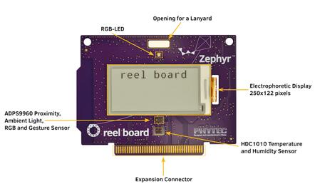
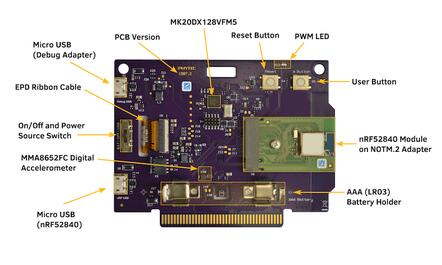
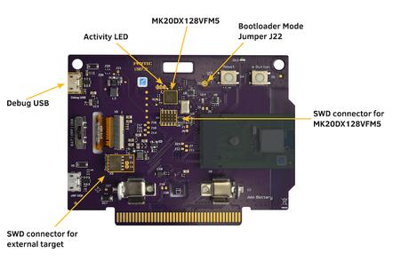
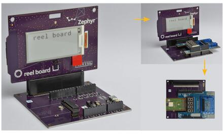

reel board
reel board
概述
reel board [3] [1] 是一款基于 Nordic Semiconductor nRF52840 SoC 的评估板。该开发板由 PHYTEC Messtechnik GmbH 与 Zephyr 项目合作，为“Get Connected”黑客松开发。开发板内置一个基于 DAPLink 接口固件和 NXP MK20DX128VFM5 SoC 的调试适配器。
它配有电泳（电子墨水）显示屏（EPD）、环境传感器（温度、湿度、光照、加速度计）和 Bluetooth 连接，便于试验和评估 Zephyr RTOS 提供的众多功能。以下是可以用 reel board 构建的一些应用构想：
电池供电的传感器节点
用于远程控制和环境传感器监测的低功耗、低成本人机界面（HMI）
放在桌上的温湿度监测器
产品、名称或价格标签
用于会议和研讨会的互动胸牌
该开发板支持 Nordic Semiconductor nRF52840 ARM® Cortex®-M4F SoC，该 SoC 集成了支持低功耗蓝牙（Bluetooth® Low Energy）和 IEEE® 802.15.4 的 2.4 GHz 收发器。
原理图可在 reel board website [3] [1] 上找到。
硬件
开发板正面有一个 RGB LED、ADPS9960 和 HDC1010 传感器以及一块电泳显示屏。RGB LED 由 nRF52840 通过 GPIO 引脚控制。显示屏由 nRF52840 通过 SPI 和 3 个 GPIO 控制。
开发板背面是其他所有元件，例如 nRF52840、调试适配器电路、开关和电源选择开关、电池座、按键以及 MMA8652FC（加速度计）传感器。
ADPS9960 是一款数字接近、环境光、RGB 和手势传感器。HDC1010 是一款数字湿度和温度传感器。MMA8652FC 是一款 12 位数字加速度计。所有传感器都连接到 I2C 总线，并各自连接一个可用作中断源的 GPIO 引脚。


从 PCB 版本 1507.2 开始，nRF52840 SoC 不再直接焊接在开发板上，而是作为模块集成在 NOTM.2 转接板上。这使开发板更加灵活，用户可以选择其他 SoC。版本 1507.1 和 1507.2 的接线完全相同。
显示
GDEH0213B1 是该开发板 2018 年推出时所用的显示屏。遗憾的是，该显示屏已停产。目前开发板随附的是 GDEH0213B72 显示屏。由于这类显示屏的产品生命周期较短，预计显示屏还会陆续更换。下表列出了 reel board 上使用过的显示屏。排线上的标签有助于区分不同的显示屏。构建应用程序时，必须根据显示屏类型使用正确的开发板标识。
显示 |
排线标签 |
控制器 / 驱动 |
开发板标识 |
|---|---|---|---|
Good Display GDEH0213B1 |
HINK-E0213 |
SSD1673 / ssd16xx |
reel_board |
Good Display GDEH0213B72 |
HINK-E0213A22 |
SSD1675A / ssd16xx |
reel_board@2 |
电源
本开发板针对低功耗应用进行了优化，支持两种供电配置：电池和 micro USB 连接器。
开关可以选择所用的电源。
TPS610981 升压转换器用于为 nRF52840 和外设（传感器和 EPD）产生供电电压。该升压转换器有两种模式：
活动模式：nRF52840 和外设的供电电压均开启
低功耗模式：仅开启 nRF52840 的供电电压
模式由 MODE 引脚（P1.00）控制。
备注
实际上，低功耗模式无法降低能耗。两路电压始终开启，参见 boards/phytec/reel_board/board.c
支持的功能
reel_board 开发板支持下列硬件功能。
说明
The list of supported hardware features was not generated. Run a full documentation build for the required metadata to be available.
连接与 IO
端口 P0
名称 |
函数 |
用法 |
|---|---|---|
P0.00 |
XL1 |
32.768 kHz 振荡器 |
P0.01 |
XL2 |
32.768 kHz 振荡器 |
P0.02 |
扩展连接器引脚 30 |
无 |
P0.03 |
扩展连接器引脚 31 |
无 |
P0.04 |
扩展连接器引脚 19 |
无 |
P0.05 |
扩展连接器引脚 11 |
无 |
P0.06 |
UART0_TX |
通过 USB 的 UART 控制台 |
P0.07 |
按键 |
用户按键（S5） |
P0.08 |
UART0_RX |
通过 USB 的 UART 控制台 |
P0.09 |
扩展连接器引脚 27 |
无 |
P0.10 |
扩展连接器引脚 29 |
无 |
P0.11 |
RGB LED（红色） |
GPIO |
P0.12 |
RGB LED（绿色） |
GPIO |
P0.13 |
PWM LED | 蜂鸣器 |
GPIO |
P0.14 |
EPD Busy 输出 |
GPIO |
P0.15 |
EPD Reset 输入 |
GPIO |
P0.16 |
EPD DC 输入 |
GPIO |
P0.17 |
EPD SPI3_CS |
SPI |
P0.18 |
CPU 复位 |
复位（S4） |
P0.19 |
EPD SPI3_CLK |
SPI |
P0.20 |
EPD SPI3_MOSI |
SPI |
P0.21 |
SPI3_MISO |
SPI（未连接） |
P0.22 |
HDC1010 DRDYn |
GPIO |
P0.23 |
APDS9960 INT |
GPIO |
P0.24 |
MMA8652FC INT1 |
GPIO |
P0.25 |
MMA8652FC INT2 |
GPIO |
P0.26 |
I2C_0 |
I2C |
P0.27 |
I2C_0 |
I2C |
P0.28 |
扩展连接器引脚 3 |
无 |
P0.29 |
扩展连接器引脚 52 |
无 |
P0.30 |
扩展连接器引脚 1 |
无 |
P0.31 |
扩展连接器引脚 37 |
无 |
端口 P1
名称 |
函数 |
用法 |
|---|---|---|
P1.00 |
外设电源开启 |
GPIO |
P1.01 |
扩展连接器引脚 32 |
无 |
P1.02 |
扩展连接器引脚 34 |
无 |
P1.03 |
扩展连接器引脚 17 |
无 |
P1.04 |
扩展连接器引脚 15 |
无 |
P1.05 |
扩展连接器引脚 13 |
无 |
P1.06 |
扩展连接器引脚 33 |
无 |
P1.07 |
扩展连接器引脚 35 |
无 |
P1.08 |
扩展连接器引脚 45 |
无 |
P1.09 |
RGB LED（蓝色） |
GPIO |
P1.10 |
扩展连接器引脚 47 |
无 |
P1.11 |
扩展连接器引脚 49 |
无 |
P1.12 |
扩展连接器引脚 51 |
无 |
P1.13 |
扩展连接器引脚 36 |
无 |
P1.14 |
扩展连接器引脚 48 |
无 |
P1.15 |
扩展连接器引脚 50 |
无 |
焊接跳线和测试点
开发板上有若干带标记的焊接跳线。可以用它们连接逻辑分析仪来检查驱动的行为，或测量信号的电压。

I2C 总线和传感器测试点
名称 |
类型 |
用法 |
|---|---|---|
J19 |
已闭合的焊接跳线 |
测试点 I2C SDA |
J20 |
已闭合的焊接跳线 |
测试点 I2C SCL |
J7 |
已闭合的焊接跳线 |
测试点 INT1 MMA8652FC |
J24 |
已闭合的焊接跳线 |
测试点 INT2 MMA8652FC |
J11 |
已闭合的焊接跳线 |
测试点 INT APDS9960 |
J12 |
已闭合的焊接跳线 |
测试点 DRDYn HDC1010 |
EPD 测试点
名称 |
类型 |
用法 |
|---|---|---|
J13 |
已闭合的焊接跳线 |
测试点 EPD Busy |
J14 |
已闭合的焊接跳线 |
测试点 EPD Reset |
J15 |
已闭合的焊接跳线 |
测试点 EPD DC |
J16 |
已闭合的焊接跳线 |
测试点 EPD SPI_CS |
J17 |
已闭合的焊接跳线 |
测试点 EPD SPI_CLK |
J18 |
已闭合的焊接跳线 |
测试点 EPD SPI_MOSI |
电源测试点
名称 |
类型 |
用法 |
|---|---|---|
J21 |
已闭合的焊接跳线 |
测试点：外设电压开/关 |
TP11 |
测试点 |
测试点：外设电压 |
TP12 |
测试点 |
测试点：nRF52840 供电电压 VDD_nRF |
TP13 |
测试点 |
测试点：升压转换器输入电压 |
内置调试适配器
调试适配器基于 DAPLink 接口固件和 NXP MK20DX128VFM5 SoC。适配器通过 micro USB 连接器供电，只要开发板连接到 USB 主机就始终处于工作状态。无论 reel board 由电池还是 USB 供电，都可以烧录和调试。如果适配器通过 USB 供电，适配器电路会使开发板轻微发热，温度传感器的读数可能会偏高最多 1.5 度。

调试适配器固件
适配器的 DAPLink 固件见 DAPLink reel board Firmware [4] [2]。要更新固件（如有必要），必须让适配器以引导加载程序模式启动。为此，应先将开发板与 USB 主机断开，闭合 J22（可使用镊子），然后将开发板重新连接到 USB 主机。
调试适配器跳线
名称 |
类型 |
用法 |
|---|---|---|
J3 |
断开的焊接跳线 |
闭合后将 UART TX 传递给外部适配器 |
J4 |
断开的焊接跳线 |
闭合后将 UART RX 传递给外部适配器 |
J22 |
断开的焊接跳线 |
闭合后以引导加载程序模式启动适配器 |
适配器 LED
名称 |
类型 |
用法 |
|---|---|---|
D11 |
绿色 |
适配器工作时闪烁 |
D14 |
红色 |
保留 |
D15 |
黄色 |
保留 |
扩展连接器
扩展连接器的尺寸与 BBC MicroBit 金手指连接器相同，引脚定义也相似。专为 reel board 设计的扩展组件称为 link board。

link board BASE
link board BASE 是一块无源扩展板，可将其他 link board 或 Arduino UNO R3 规格的第三方扩展板连接到 reel board。此外，它还带有一个 NOTM.2 连接器和比 reel board 更强的 DCDC 转换器。

link board BASE 可以通过两种方式与其他 link board 或第三方扩展板配合使用：
- 用作转接板
将 reel board 插到 link board BASE 上。只要 I2C 设备之间没有冲突，reel board 上的外设和扩展板都可以使用。应注意为整个电路提供足够的电源。
- 独立使用
将 NOTM.2 转接板从 reel board 上取下，插到 link board BASE 的 NOTM.2 连接器上。扩展板连接器的接线与上述配置完全相同，无需为扩展板修改软件。独立配置更适合以下场景：不使用 reel board 上的外设或外设存在冲突、reel board 提供的电源不足，或用于现场原型。

link board BASE 上的元件：
- reel board 连接器：
2x40 位金手指连接器。
- Micro USB 连接器：
USB 可以用作电源。USB 数据线连接到 NOTM.2 连接器。
- NOTM.2 连接器：
用于连接 NOTM.2 适配器的连接器。如果使用该连接器，应将 reel board 从 reel board 连接器上取下。
- SWD 连接器 X11：
连接到 NOTM.2 连接器。在独立配置下，可以连接调试探针来编程或调试 MCU。
- 备用电源 X5 或 X9：
正极引脚靠近 + 号一侧。标称电压为 3.3V，没有反接保护和过压保护。请谨慎使用。
- 扩展板连接器：
用于连接 link board 和 Arduino UNO R3 规格的第三方扩展板的连接器。只支持设计为 3.3V 供电电压的扩展板。
电源选择开关各位置的含义：
- EXT
link board BASE 由备用电源连接器 X9 或 X5 供电。
- USB
link board BASE 由 USB 连接器供电（经过 DCDC 转换器）。
- RB
link board BASE 由 reel board 供电。可用功率低于 0.3W，具体取决于 reel board 使用哪种电源供电。
编程与调试
reel_board 开发板配置的应用程序可以按常规方式构建和烧录（详见 构建应用程序 和 运行应用程序）。
烧录
如果使用 Linux，请（以 root 身份）创建一条 udev 规则，以解决不以 root 身份烧录时的权限问题。
# echo 'ATTR{idProduct}=="0204", ATTR{idVendor}=="0d28", MODE="0666", GROUP="plugdev"' > /etc/udev/rules.d/50-cmsis-dap.rules
重新加载规则并重新插拔设备。
$ sudo udevadm control --reload-rules
最后，拔下并重新插入开发板，使规则生效。
按常规方式构建并烧录应用程序（详见 构建应用程序 和 运行应用程序）。
以下以 Hello World 应用程序为例。
首先，运行你常用的终端程序以监听输出。
$ minicom -D <tty_device> -b 115200
将 <tty_device> 替换为 reel board 所在的端口。例如在 Linux 下为 /dev/ttyACM0。
然后按常规方式构建并烧录应用程序。
# From the root of the zephyr repository
west build -b reel_board samples/hello_world
west flash
备注
对于配备 GDEH0213B72 的开发板，请使用 reel_board@2 构建应用程序，参见 显示。
# From the root of the zephyr repository
west build -b reel_board@2 samples/hello_world
west flash
调试
可以按常规方式调试应用程序。以下以 Hello World 应用程序为例。
# From the root of the zephyr repository
west build -b reel_board samples/hello_world
west debug